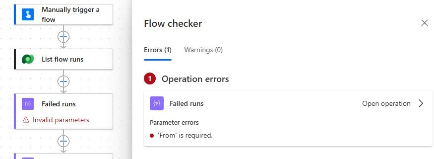
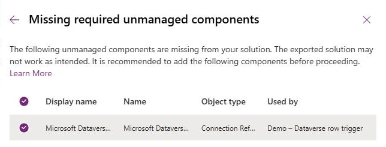

- Power Automate
- Level 10 · Enterprise ALM and admin · 2 of 6
Solution checker and flow checker
Two checkers look at your work before it goes anywhere. Flow checker runs inside the designer and checks one flow. Solution checker runs a static analysis over a whole solution, including the solution's own metadata. Both are free and quick; run them before every export.
Flow checker
The stethoscope icon in the designer's toolbar opens it. It lists errors (the flow can't be saved or will fail) and warnings (it works, but there's a better way). To show it, the demo removed the From value of a Filter array without saving:

Warnings typically cover things like an action in a loop that could be outside it, or a deprecated action version. Fix errors before saving; treat warnings as a checklist.
Solution checker
In Solutions, select the solution, then Solution checker > Run. It takes a few minutes. The demo ran it on the website's demo solution:

The full message says the solution depends on a connection reference that isn't in the solution, and that it will fail to import in another environment. Three demo flows used a Dataverse connection reference created outside the solution. Export catches the same problem:


The fix is Add existing > Connection reference (or Add required objects on the flow), then run the checker again.
Making it mandatory
In a Managed Environment, admins can set solution checker enforcement to Warn or Block, so imports with critical issues are flagged or refused. In pipelines, the build tools include a checker task that can fail the build.
New to this? Start from the basics optional
Static analysis: checking something without running it, by reading its definition against a set of rules.
Dependency: something an object needs to work, such as a connection reference a flow uses.
Build it step by step optional
- Open each flow you changed and run Flow checker. Fix every error.
- In Solutions, run Solution checker on the solution and open the results.
- Sort by severity. Fix Critical and High first; read each rule's reference link.
- Add any missing dependencies to the solution, then run the checker again.
- Export with Run solution checker on export left on.
Common mistakes
- Skipping the "missing components" step in the export wizard. The import into test fails later, with a less helpful message.
- Creating connection references from the designer outside a solution. Create them inside the solution.
- Treating "no flow checker errors" as "the flow is right". It checks structure, not your business logic.